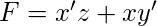
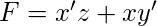
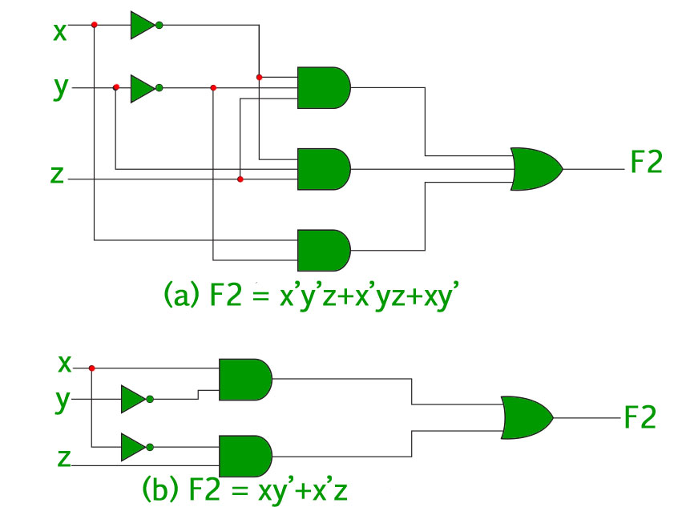
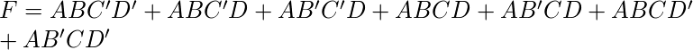

As discussed in the “Representation of Boolean Functions” every boolean function can be expressed as a sum of minterms or a product of maxterms. Since the number of literals in such an expression is usually high, and the complexity of the digital logic gates that implement a Boolean function is directly related to the complexity of the algebraic expression from which the function is implemented, it is preferable to have the most simplified form of the algebraic expression.
The process of simplifying the algebraic expression of a boolean function is called minimization. Minimization is important since it reduces the cost and complexity of the associated circuit.
For example, the function  can be minimized to . The circuits associated with above expressions is –
can be minimized to . The circuits associated with above expressions is –

It is clear from the above image that the minimized version of the expression takes a less number of logic gates and also reduces the complexity of the circuit substantially. Minimization is hence important to find the most economic equivalent representation of a boolean function.
Minimization can be done using Algebraic Manipulation or K-Map method. Each method has it’s own merits and demerits.
Minimization using Algebraic Manipulation –
This method is the simplest of all methods used for minimization. It is suitable for medium sized expressions involving 4 or 5 variables. Algebraic manipulation is a manual method, hence it is prone to human error.
Common Laws used in algebraic manipulation :


- Example 1 – Minimize the following boolean function using algebraic manipulation-
 - Solution – Properties refer to the three common laws mentioned above.
![\begin{align*} F=\:&ABC^\prime(D^\prime + D) +AB^\prime C^\prime D + ACD(B + B^\prime) &&\\ &\:+ ACD^\prime(B + B^\prime)&&\\ =\:&ABC^\prime +AB^\prime C^\prime D + ACD +ACD^\prime && \text{Using Property-1}\\ =\:&ABC^\prime +AB^\prime C^\prime D + AC(D +D^\prime )&&\\ =\:&ABC^\prime +AB^\prime C^\prime D + AC && \text{Using Property-1}\\ =\:&A(BC^\prime +C)+AB^\prime C^\prime D &&\\ =\:&A(B+C)+AB^\prime C^\prime D&& \text{Using Property-2}\\ =\:&AB +AC+AB^\prime C^\prime D &&\\ =\:&AB + AC + A C^\prime D && \text{Using Property-2}\\ =\:&AB + AC + AD && \text{Using Property-2}\\ \end{align*}](../../../imgs/digital-logic/377ef52a7ec8fd0521ad739870eb60f0.jpg "Rendered by QuickLaTeX.com")
Minimization using K-Map –
The Algebraic manipulation method is tedious and cumbersome. The K-Map method is faster and can be used to solve boolean functions of upto 5 variables. Please refer this link to learn more about K-Map.
- Example 2 – Consider the same expression from example-1 and minimize it using K-Map.
- Solution – The following is a 4 variable K-Map of the given expression.

The above figure highlights the prime implicants in green, red and blue.
The green one spans the whole third row, which gives us –
The red one spans 4 squares, which gives us –
The blue one spans 4 squares, which gives us –
So, the minimized boolean expression is-
GATE CS Corner Questions
Practicing the following questions will help you test your knowledge. All questions have been asked in GATE in previous years or in GATE Mock Tests. It is highly recommended that you practice them.
1. GATE CS 2012, Question 30
2. GATE CS 2007, Question 32
3. GATE CS 2014 Set-3, Question 17
4. GATE CS 2005, Question 18
5. GATE CS 2004, Question 17
6. GATE CS 2003, Question 45
7. GATE CS 2002, Question 12
References-
K-Map – Wikipedia
Digital Design, 5th edition by Morris Mano and Michael Ciletti